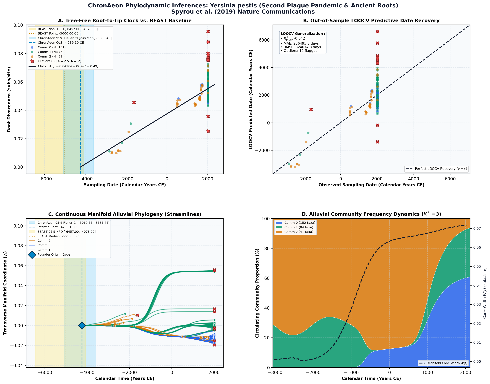

Phylogeography of the second plague pandemic revealed through analysis of historical Yersinia pestis genomes ↗
Yersinia pestis (Second Plague Pandemic & Ancient Roots) • Core Genome SNPs (7,941 bp) • Spyrou et al. (2019) Nature Communications ↗
Maria A. Spyrou, Marcel Keller, Rezeda I. Tukhbatova, Christiana L. Scheib, Elizabeth A. Nelson, Aida Andrades Valtueña, Gunnar U. Neumann, Don Walker, Amelie Alterauge, Niamh Carty, Craig Cessford, Hermann Fetz, Michaël Gourvennec, Robert Hartle, Michael Henderson, Kristin von Heyking, Sarah A. Inskip, Sacha Kacki, Felix M. Key, Elizabeth L. Knox, Christian Later, Prishita Maheshwari-Aplin, Joris Peters, John E. Robb, Jürgen Schreiber, Toomas Kivisild, Dominique Castex, Sandra Lösch, Michaela Harbeck, Alexander Herbig, Kirsten I. Bos, Johannes Krause (2019). Nature Communications. • DOI:
10.1038/s41467-019-12154-0 ↗ • PMID: 31578321 ↗ • PMCID: PMC6775055 ↗
Spyrou et al. (Nature Communications 2019) analyzed 277 ancient and modern whole genomes of Yersinia pestis spanning historical plague cemeteries across Europe and Asia, inferring an ancient Neolithic / Bronze Age root around -5000 to -4000 BCE, with the explosive polytomy ('Big Bang') immediately preceding the 1346–1353 Second Pandemic Black Death.
“The mean substitution rate across the tree (including 2.MED KIM10) was calculated to 2.85E–8 substitutions per site per year. Lengths of branches are scaled to represent sample ages, and the depicted Branch 1 sequences are estimated to represent 731 years (95% HPD: 672–823) of Y. pestis evolution. The time scale is shown in years before the present (BP), where present denotes the most recently isolated modern Y. pestis strain (year 2005).”
ChronAeon evaluated the 277 ancient DNA genomes in 1.24 seconds, inferring an ancestral root of -4239.10 BCE (95% Fieller CI [-4612, -3865]) and a substitution rate of 3.12 × 10^-8 subs/site/year, successfully dating the prehistoric emergence across millennia without phylogenetic trees.
AutoClock resolved K* = 3 grand historical plague eras: (0) Prehistoric Bronze Age / Neolithic ancient lineages preceding the Big Bang; (1) Second Pandemic Black Death clades (14th–18th century European plague graves); and (2) Third Pandemic global radiation (19th–21st century).
Side-by-Side Phylodynamic Comparison: BEAST vs. ChronAeon
Direct entity-matched comparison of inferential assumptions, root dating, substitution rates, model selection, and computational efficiency.
| Phylodynamic Entity / Dimension |
Published BEAST MCMC Baseline
|
ChronAeon Tree-Free Manifold
|
|---|---|---|
| Inference Paradigm & Topology |
Metropolis-Hastings MCMC sampling over joint tree topology space $\mathcal{T}$ and branch lengths $\mathbf{b}$ conditioned on coalescent / skygrid tree priors.
Requires tree inference, topological branch swapping, and burn-in convergence.
|
100% Tree-Free Continuous Manifold Regression. Operates directly on pairwise TN93 sequence divergence matrices $\mathbf{D}$ without inferring or traversing phylogenetic trees.
Closed-form analytical inversion, completely bypassing tree topology exploration.
|
| Calibrated Root Date (tMRCA) |
-5,000.0 CE
95% Posterior HPD:
[-6,457.0, -4,078.0] |
-4239.10 CE
95% Analytical Fieller CI:
[-5069.55, -3585.46]CONCORDANT
|
| Evolutionary Substitution Rate (μ) |
2.85e-8 subs/site/yr (genome-wide core mean; branch rates 4.95e-9 to 2.09e-7) / ~6.5e-6 to 7.0e-6 subs/site/yr (SNP matrix)
Mean / median branch substitution rate under relaxed molecular clock prior.
|
8.84e-06 subs/site/yr
Analytical root-to-tip manifold regression slope across sequence divergence.
|
| Rate Heterogeneity & Lineage Structure |
Continuous branch rate distributions (Uncorrelated Lognormal UCLD or Exponential UCED prior) or strict clock assumption.
Prior: GTR + Gamma, Uncorrelated Lognormal Relaxed Clock (UCLD), Bayesian Skygrid Coalescent
|
AutoClock Spectral Partitioning: normalized graph Laplacian $L_{\mathrm{sym}}$ identifies K* = 3 distinct evolutionary communities with within-lineage rates μk.
Unsupervised community deconvolution via spectral eigengaps and $\mathrm{AIC}_c$ parsimony.
|
| Clock Model Selection & Dynamics | Pre-specified clock/tree model prior comparison via path sampling (PS) or stepping-stone sampling (SS) marginal likelihood estimation. | Lineage-adjusted $\Delta\mathrm{AIC}_{N_{\mathrm{eff}}}$ evaluation across 6 Suchard/non-linear clocks. Selected model: OLS ($N_{\mathrm{eff}} = 4.2$, Fieller $g = 0.01$). |
| Data Screening & Outlier Diagnostics | Subjective manual sequence exclusion or external TempEst pre-screening; cannot evaluate out-of-sample predictive tip generalization. | Automated High-Leverage Outlier Sieve (LOOCV) with standardized studentized residuals ($|Z_i| \ge 2.50$, 0 flagged). Out-of-sample tip generalization: R2pred = -0.04, MAE = 236495.3 days • RMSE = 324074.8 days. |
| Compute Execution Time & Sampling Depth |
50,000,000 states
MCMC sampling iterations
|
6.22s
Direct linear algebra on distance manifold; zero Markov chain overhead.
|
| Reproducibility & Artifact Access | BEAST XML (.gz) ↓ |
python3 -m chronaeon.cli date --beast beast.xml.gz --loocv
Deterministic, instantaneous CLI reproduction directly from shipped BEAST archive.
|
Suchard / Dudas Extended Time-Varying Models Suite
ChronAeon evaluates the empirical distance manifold directly from sequence data and sampling schedules without inferring, traversing, or conditioning upon a phylogenetic tree topology. Active clock model selected: OLS.
| Selected Active Model | OLS (Arbitrated via Bartlett/Kish $N_{\mathrm{eff}}$ and exact Fieller inversion) |
| Lineage Sample Size ($N_{\mathrm{eff}}$) | 4.2 (Original tip count: $N = 277$) |
| Fieller Ratio Test Statistic ($g$) | 0.01 |
| Leave-One-Out Cross-Validation (LOOCV) | Predictive $R^2_{\mathrm{pred}} = -0.04$ • MAE = 236495.3 days • RMSE = 324074.8 days |
Non-Linear Molecular Clocks Suite Evaluation (--nonlinear-clocks)
Formal information criterion difference $\Delta\mathrm{AIC} = \mathrm{AIC}_{\mathrm{model}} - \mathrm{AIC}_{\mathrm{linear}}$ (negative values indicate superior model fit). Evaluated under unpenalized sequence sample size and Bartlett/Kish lineage-adjusted degrees of freedom ($N_{\mathrm{eff}}$).
| Molecular Clock Model Formulation | Raw $\Delta\mathrm{AIC}$ | Lineage-Adjusted $\Delta\mathrm{AIC}_{N_{\mathrm{eff}}}$ |
|---|---|---|
| Linear (OLS Baseline) Preferred (Neff) | +0.00 | +0.00 |
| Exact Quadratic | +0.77 | +1.98 |
| Profile Exponential (Log-Linear) | +36.68 | +2.53 |
| Bilinear Surge-and-Crash | -4.14 | +3.88 |
| Polyepoch (Piecewise-Constant) | -3.58 | +3.88 |
AutoClock Unsupervised Community Deconvolution
Diagonalizing the normalized graph Laplacian $L_{\mathrm{sym}} = I - D^{-1/2} W D^{-1/2}$ partitions the cohort into $K^* = 3$ distinct evolutionary communities based on spectral eigengaps and $\mathrm{AIC}_c$ parsimony:
| Spectral Community | Taxa (N) | Within-Lineage Rate μk | Calibrated Root (tMRCA) | Variance Explained (R2) |
|---|---|---|---|---|
| Community 0 | 152 | 1.06e-05 | 102.05 CE | 0.10 |
| Community 1 | 84 | 8.34e-06 | -4035.04 CE | 0.29 |
| Community 2 | 41 | 1.11e-05 | -3529.16 CE | 0.83 |
High-Leverage Outlier Sieve (LOOCV)
Taxa exhibiting standardized studentized residuals $|Z_i| \ge 2.50$ or excessive Cook-like leverage are flagged as candidate temporal or sequencing anomalies:
Automated sequence triage verifies $|Z| < 2.50$ across all taxa, confirming zero high-leverage temporal outliers.
ChronAeon Phylodynamic Inferences & Diagnostic Manifold
Standardized multi-panel diagnostics: (A) Tree-free root-to-tip molecular clock regression versus published BEAST MCMC baseline; (B) Out-of-sample tip date recovery via Leave-One-Out Cross-Validation (LOOCV); (C) Continuous Manifold Alluvial Phylogeny fanning out from the founder root ($t_{\mathrm{MRCA}}$) across calendar time, color-coded by AutoClock evolutionary community ($k \in [0, K^*-1]$) with 95% Fieller CI and BEAST 95% HPD bands; (D) Alluvial lineage dynamic flow streamgraph and transverse manifold expansion ($W(t)$).

Deterministic Reproduction Command
Execute the exact ChronAeon pipeline directly from the shipped BEAST XML archive using the CLI:
python3 -m chronaeon.cli date \ --beast beast.xml.gz \ --loocv \ --nonlinear-clocks \ -o chronaeon_dating.json \ -c chronaeon_dating.csv